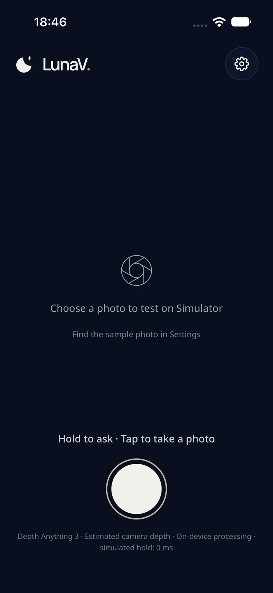
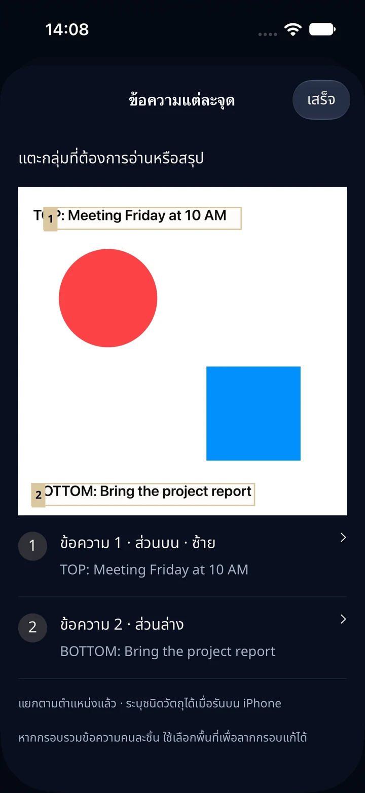

01รับภาพและคำถาม
กล้องกับไมโครโฟน
เริ่มพร้อมกัน
กดค้างเพื่อถ่ายภาพใหม่และพูดคำถาม เมื่อปล่อยปุ่ม iOS จะถอดเสียงเป็นข้อความบนเครื่อง
ภาพ + คำถามในรอบเดียวกันกดค้างเพื่อถ่ายภาพและถามด้วยเสียง แล้ว LunaV จะเปลี่ยนข้อมูลจากช่วงเวลานั้นเป็นคำตอบที่อ่านและฟังได้ โดยประมวลผลบน iPhone

LunaV 3.0.0 · หน้าจอ Simulator ในโหมดภาพทดสอบ
แกนกลางของ LunaV เลือกใช้เครื่องมือให้ตรงกับสิ่งที่คุณถาม เพื่อไม่ประมวลผลเกินความจำเป็นและบอกที่มาของข้อมูลได้ชัดเจน
กดค้างเพื่อถ่ายภาพใหม่และพูดคำถาม เมื่อปล่อยปุ่ม iOS จะถอดเสียงเป็นข้อความบนเครื่อง
ภาพ + คำถามในรอบเดียวกันภาพ คำถาม และข้อมูลที่เกี่ยวข้อง อยู่ในบริบทเดียวกัน
เลือกเครื่องมือตามคำถาม
Apple Vision
OCR
Qwen3‑VL‑2B
บน MLX
LiDAR หรือ
Depth Anything 3
หน้าจอแสดงคำถามที่ถอดเสียงพร้อมคำตอบ และใช้เสียง Apple ในเครื่องเพื่ออ่านคำตอบที่เสร็จแล้ว
ข้อมูลอยู่บน iPhoneระยะอ้างอิงภาพที่ถ่ายในขณะนั้น แอปไม่มีระบบเตือนสิ่งกีดขวางต่อเนื่องหรือการนำทางขณะเดิน
แต่ละเส้นทางเริ่มจากภาพเดียวกัน และเรียกใช้เฉพาะข้อมูลที่คำถามต้องการ
ขณะกดค้าง LunaV รับภาพและเสียงไปพร้อมกัน เมื่อปล่อยปุ่ม ระบบหยุดรับเสียง ถอดคำถาม และส่งความหมายของภาพให้ Qwen3‑VL บน iPhone
Apple Vision อ่านข้อความบนเครื่อง แล้วให้คุณเลือกกรอบหรือกลุ่มข้อความจากป้าย เมนู ฉลาก หรือเอกสาร ก่อนอ่านต้นฉบับหรือสรุปเฉพาะส่วนที่ต้องการ

เมื่อถามถึงระยะ LunaV ใช้ LiDAR จากภาพที่ถ่ายบนกล้องหลังที่รองรับ หรือใช้ Depth Anything 3 Metric พร้อมข้อมูลเลนส์สำหรับอุปกรณ์ที่ไม่มี LiDAR
คำถามที่ถอดเสียงและคำตอบจะแสดงร่วมกันบนหน้าจอ เมื่อคำตอบเสร็จ เสียง Apple ที่ตั้งค่าไว้สามารถอ่านคำตอบกลับให้ฟังได้

ภาพหน้าจอจาก Simulator วันที่ 29 ตุลาคม 2026 ใช้แสดงหน้าตาและลำดับการใช้งานของแอป
การเข้าใจภาพ การอ่าน OCR การถอดเสียง และการตอบคำถามทำบนเครื่อง ไม่มี server หรือ API key สำหรับเส้นทางถามภาพของ LunaV